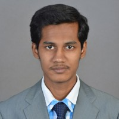

|  |
SASINATH MARUDAVAANANemail id :sasinathm@gmail.comABOUT ME: Experienced civil site engineer in Bridge design field. Skilled in bridge,bridge superstructure,steel structures,Pile foundation etc. Strong engineering professional with a Master of Technology - MTech focused in Midas Civil from Anna University. Posses good knowledge in the structural analysis. Expert in preparation of Bill of Quantities (BOQ) & estimation of project costs |
|---|
| 2020-Till Date | --- Design Coordinator, WDFC, CTP3R, Ahmedabad, Gujarat. |
| 2018-2020 | --- Engineering Consultant, MMRDA Metro line 2B CA04 R, Mumbai, Maharastra |
| 2018 - Till Date | --- L&T Infrastructure Engineering Limited, Chennai |
| 2016 - 2018 | --- M.E, Structural Engineering from Anna University, Chennai with Distinction |
| 2012 - 2016 | --- B.E, Civil Engineering from RMK Engineering College, Chennai with 83%. |
| 2021- till date: | Western Dedicated Freight Corridor Package –CTP3R- Iqbalgarh to Vadodara |
| Client: | NKC Consortium |
| Position held: | Engineering Consultant |
| Responsibilities: | Design Coordinator for the approval of Erection Scheme of Superstructure for ROB, RFO, Major Bridge from the Engineer and competent authorities and coordinated site related data for the feasibility of the work. |
| Place of work: | Ahmedabad, Gujarat |
| 2020: | Western Dedicated Freight Corridor Package –CTP3R- Iqbalgarh to Vadodara |
| Client: | NKC Consortium |
| Position held: | Engineering Consultant |
| Responsibilities: | Design Coordinator for the approval of construction design package drawings, shop drawings of sub-contractor from the Engineer / the client. |
| Place of work: | Ahmedabad, Gujarat |
| 2018-2020: | Detailed Design of 22 Elevated Station and via ducts from D.N Nagar to Mandale |
| Client: | Simplex infra structures limited. |
| Position held: | Engineering consultant at L&T Infrastructure Engineering Limited Mumbai. |
| Responsibilities: | Design of Sub structures and foundation of several viaducts having U and I type girder as superstructure, pile, pile cap and pier with utilities underground, preparation of design document and drawings as per client requirement. |
| Place of work: | Mumbai, Maharastra |
| 2018-2020: | Detailed Design of Structures for 4-Laning of Bar-Bilara-Jodhpur Section of NH-11 in Rajasthan |
| Client: | L&T Construction. |
| Position held: | Post Graduate Engineering Trainee at L&T Infrastructure Engineering Limited Mumbai. |
| Responsibilities: | Design and Drawing of Culverts (Box Culvert), design and drawing of U-type wall at median and end of box section, BOQ of Major, Minor bridges, culvert and its components |
| Place of work: | Mumbai, Maharastra. |
I hereby declare that the above mentioned information is correct up to my knowledge and I bear responsibility for the correctness of the above mentioned particulars